Original world-design candidates. Human review pending. These are raster concepts for a future real stylized-3D environment, not meshes or a playable Godot scene. Existing Home geometry and gameplay are unchanged.
360×640 and 540×960 are review viewports, not device performance tests. Existing orange idle frame is displayed separately as a static conceptual overlay; its 40/60 px frame canvas is an uncalibrated review assumption. Original concept PNGs and actor sheet are unchanged. No depth, motion, collision, reachability, or occlusion proof is implied.
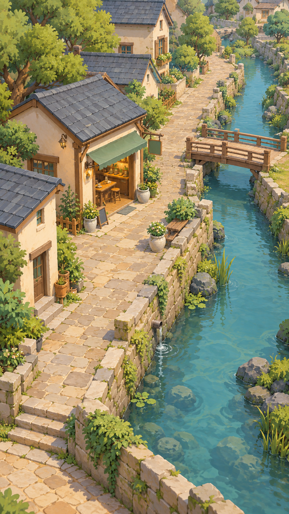
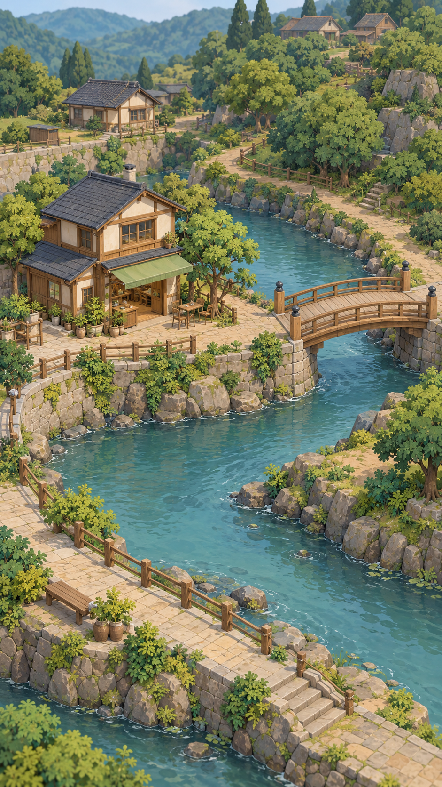
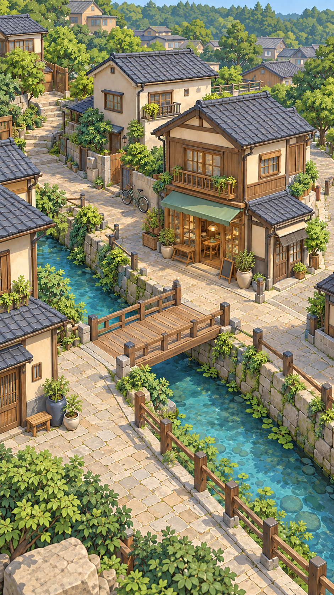
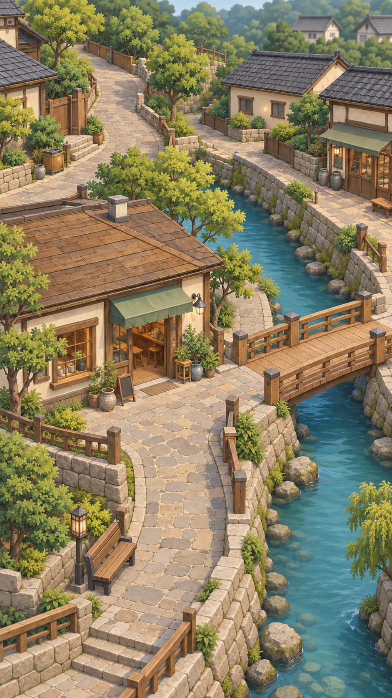
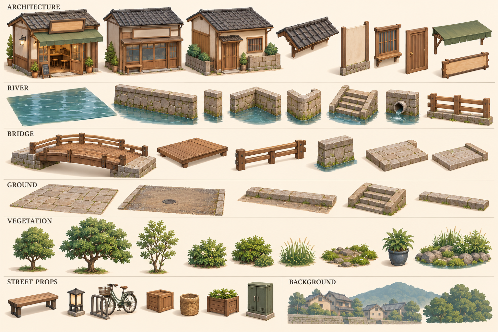
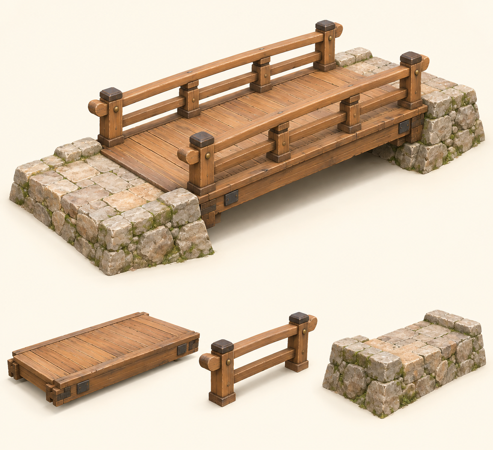
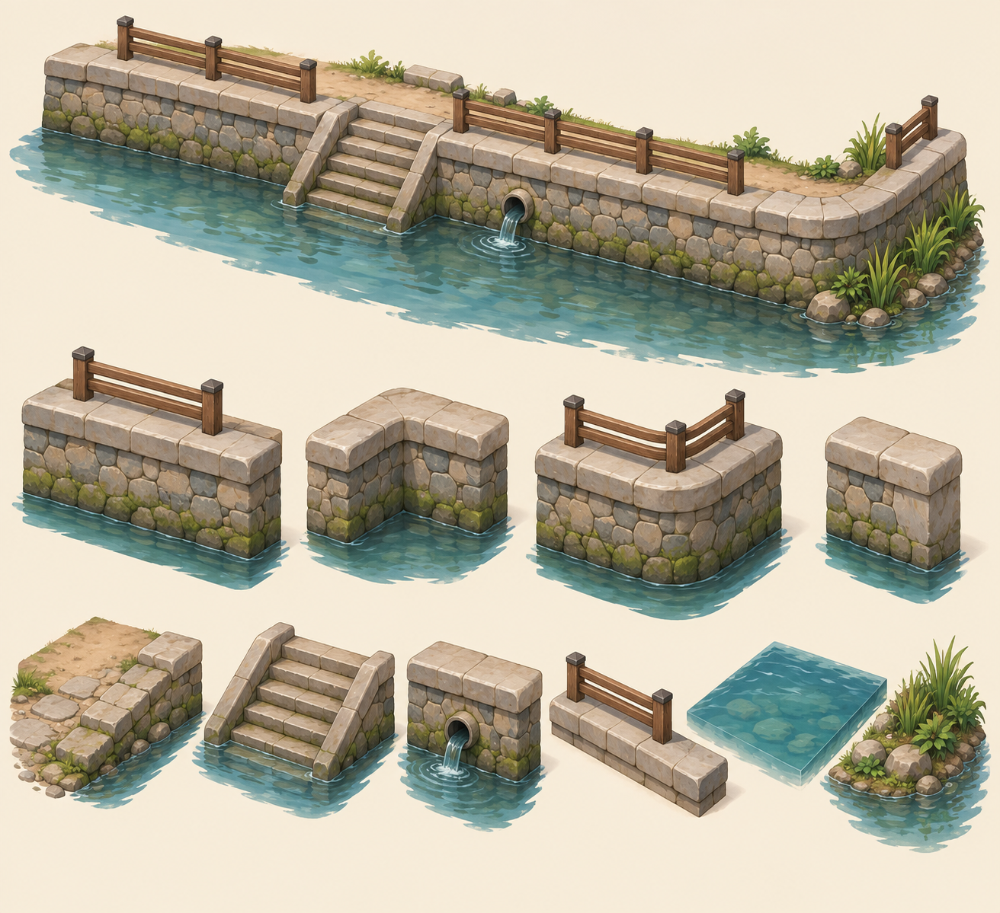
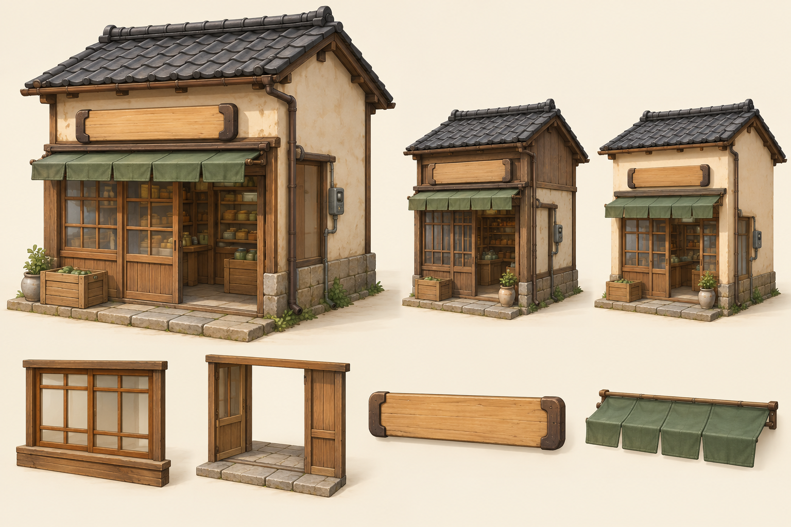
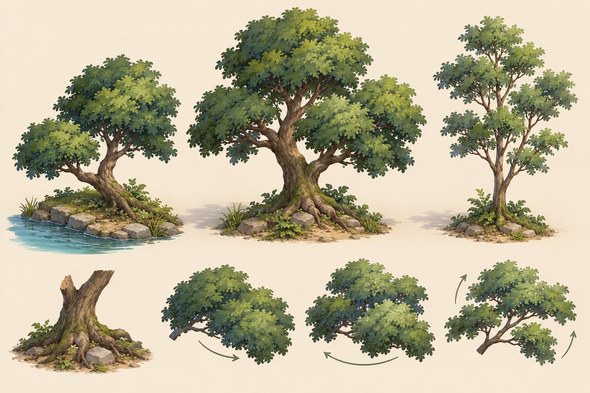
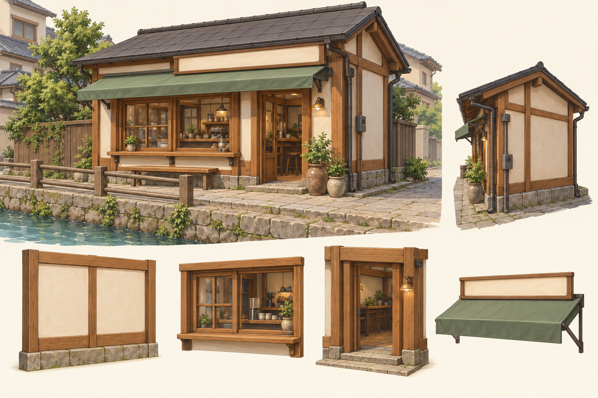
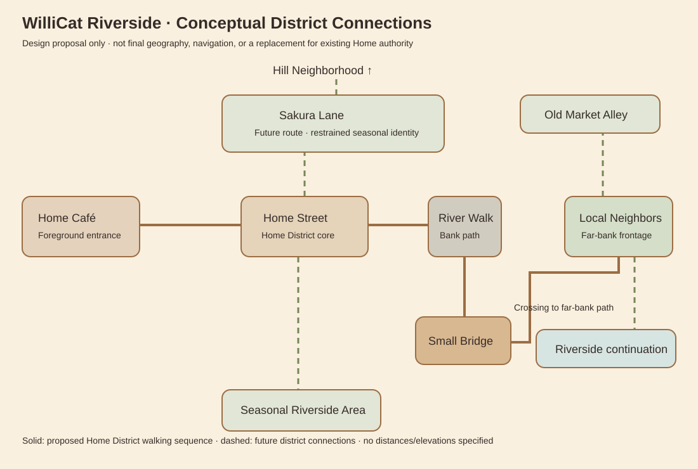